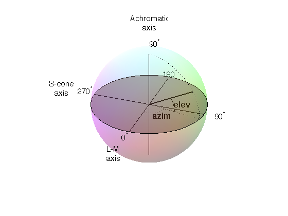

|
|
|
|
|
The color of stimuli can be specified when creating a stimulus and when using setColor() in a variety of ways. There are three basic color spaces that PsychoPy can use, RGB, DKL and LMS but colors can also be specified by a name (e.g. ‘DarkSalmon’) or by a hexadecimal string (e.g. ‘#00FF00’).
examples:
stim = visual.GratingStim(win, color=[1,-1,-1], colorSpace='rgb') #will be red
stim.setColor('Firebrick')#one of the web/X11 color names
stim.setColor('#FFFAF0')#an off-white
stim.setColor([0,90,1], colorSpace='dkl')#modulate along S-cone axis in isoluminant plane
stim.setColor([1,0,0], colorSpace='lms')#modulate only on the L cone
stim.setColor([1,1,1], colorSpace='rgb')#all guns to max
stim.setColor([1,0,0])#this is ambiguous - you need to specify a color space
Any of the web/X11 color names can be used to specify a color. These are then converted into RGB space by PsychoPy.
These are not case sensitive, but should not include any spaces.
This is really just another way of specifying the r,g,b values of a color, where each gun’s value is given by two hexadecimal characters. For some examples see this chart. To use these in PsychoPy they should be formatted as a string, beginning with # and with no spaces. (NB on a British Mac keyboard the # key is hidden - you need to press Alt-3)
This is the simplest color space, in which colors are represented by a triplet of values that specify the red green and blue intensities. These three values each range between -1 and 1.
Examples:
- [1,1,1] is white
- [0,0,0] is grey
- [-1,-1,-1] is black
- [1.0,-1,-1] is red
- [1.0,0.6,0.6] is pink
The reason that these colors are expressed ranging between 1 and -1 (rather than 0:1 or 0:255) is that many experiments, particularly in visual science where PsychoPy has its roots, express colors as deviations from a grey screen. Under that scheme a value of -1 is the maximum decrement from grey and +1 is the maximum increment above grey.
Note that PsychoPy will use your monitor calibration to linearize this for each gun. E.g., 0 will be halfway between the minimum luminance and maximum luminance for each gun, if your monitor gammaGrid is set correctly.
Another way to specify colors is in terms of their Hue, Saturation and ‘Value’ (HSV). For a description of the color space see the Wikipedia HSV entry. The Hue in this case is specified in degrees, the saturation ranging 0:1 and the ‘value’ also ranging 0:1.
Examples:
- [0,1,1] is red
- [0,0.5,1] is pink
- [90,1,1] is cyan
- [anything, 0, 1] is white
- [anything, 0, 0.5] is grey
- [anything, anything,0] is black
Note that colors specified in this space (like in RGB space) are not going to be the same another monitor; they are device-specific. They simply specify the intensity of the 3 primaries of your monitor, but these differ between monitors. As with the RGB space gamma correction is automatically applied if available.
To use DKL color space the monitor should be calibrated with an appropriate spectrophotometer, such as a PR650.
In the Derrington, Krauskopf and Lennie [1] color space (based on the Macleod and Boynton [2] chromaticity diagram) colors are represented in a 3-dimensional space using spherical coordinates that specify the elevation from the isoluminant plane, the azimuth (the hue) and the contrast (as a fraction of the maximal modulations along the cardinal axes of the space).
In PsychoPy these values are specified in units of degrees for elevation and azimuth and as a float (ranging -1:1) for the contrast.
Note that not all colors that can be specified in DKL color space can be reproduced on a monitor. Here is a movie plotting in DKL space (showing cartesian coordinates, not spherical coordinates) the gamut of colors available on an example CRT monitor.
Examples:
- [90,0,1] is white (maximum elevation aligns the color with the luminance axis)
- [0,0,1] is an isoluminant stimulus, with azimuth 0 (S-axis)
- [0,45,1] is an isoluminant stimulus,with an oblique azimuth
| [1] | Derrington, A.M., Krauskopf, J., & Lennie, P. (1984). Chromatic Mechanisms in Lateral Geniculate Nucleus of Macaque. Journal of Physiology, 357, 241-265. |
| [2] | MacLeod, D. I. A. & Boynton, R. M. (1979). Chromaticity diagram showing cone excitation by stimuli of equal luminance. Journal of the Optical Society of America, 69(8), 1183-1186. |
To use LMS color space the monitor should be calibrated with an appropriate spectrophotometer, such as a PR650.
In this color space you can specify the relative strength of stimulation desired for each cone independently, each with a value from -1:1. This is particularly useful for experiments that need to generate cone isolating stimuli (for which modulation is only affecting a single cone type).